打开命令行 输入 go env能打印东西说明 go 安装成功
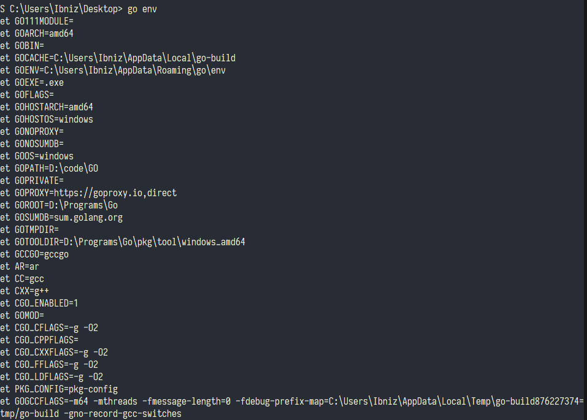
安装完成 go 后，首先在环境变量里添加
GOROOT go语言安装位置
GOPATH 你希望的工作目录，后续依赖包会下载到此目录下的 src 文件夹下,如果不指定 会自动创建并下载到用户目录的 go/src文件夹下
比如我的
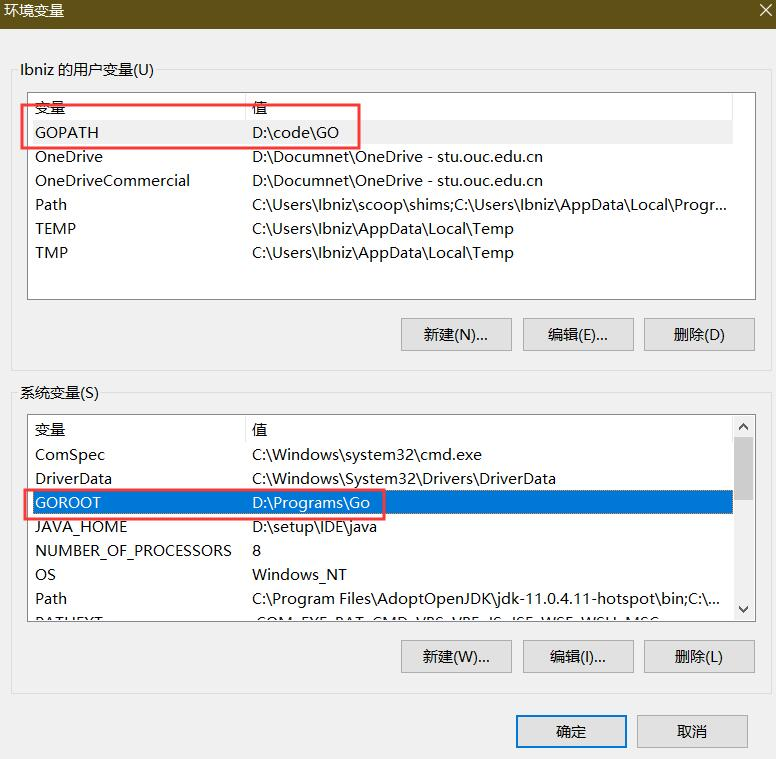
新建一个文件夹作为 GO 的编写目录，用 vscode 打开，新建一个 go 文件，然后 点击安装 go 拓展
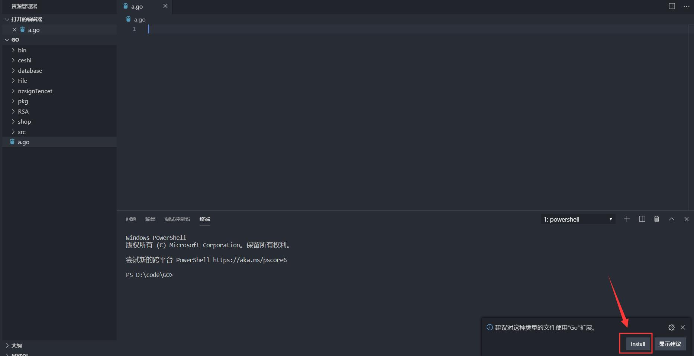
安装代码检查工具，如果未弹出选项，可以关闭vs code 重新打开
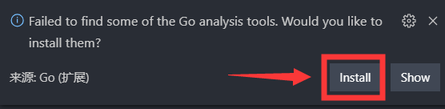
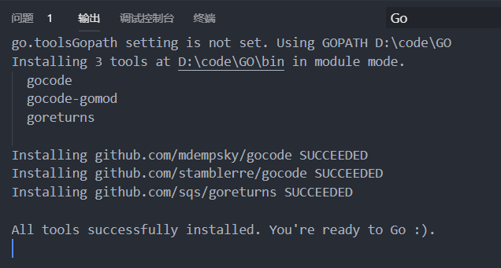
可以看到下载到了 $GOPATH/bin目录下，然后编写代码，按下f5或者到调试界面点绿色的小三角就能运行，不需要配置 vs code
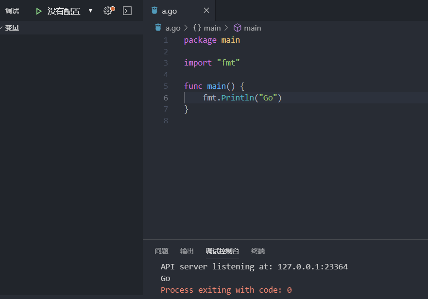
设置-拓展 定位到 GO configuration 这个就是 go 拓展的设置
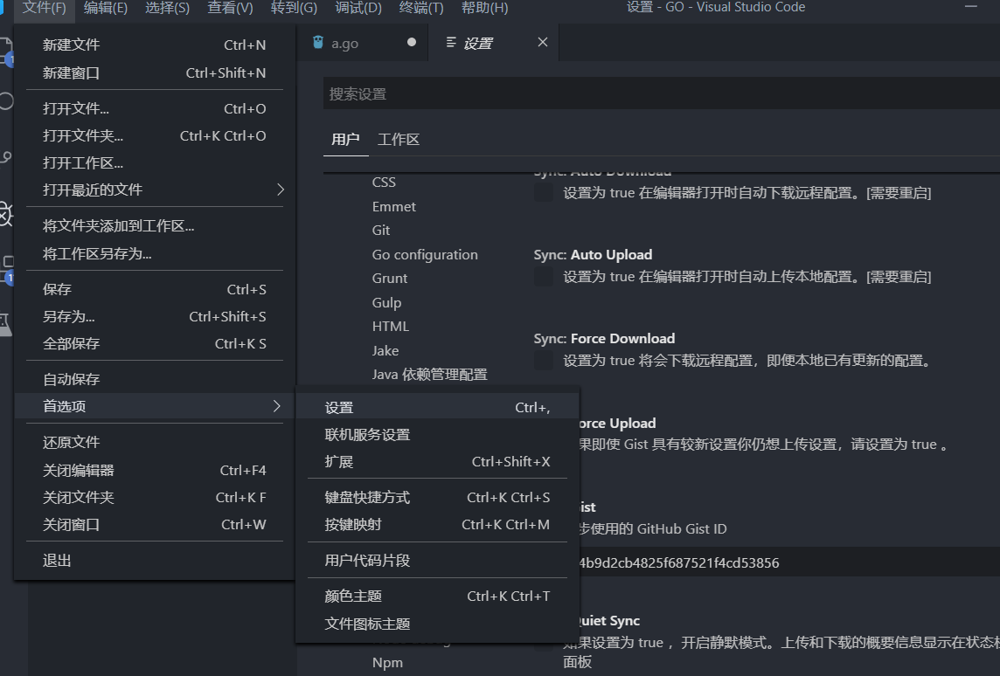
打开如下选项
自动导入使用的包
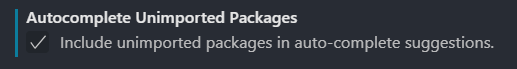
关闭保存时构建，有时会带来不必要的麻烦
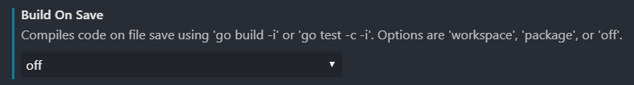
代码自动补全
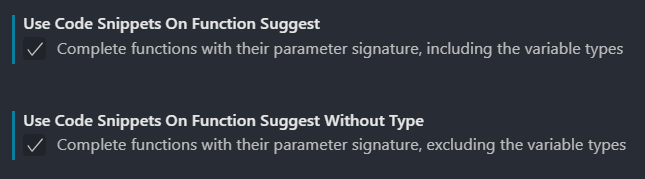
更改 doc tool
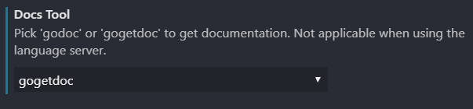
自动推断go path(可选)
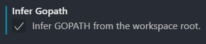
如果你想使用在线服务进行代码补全相关，如果你使用 go mod，推荐开启，不使用 go mod 开启的话会找不到同一个包下其他文件的函数 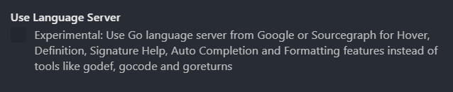
完成之后的设置json
"go.buildOnSave": "off",
"go.autocompleteUnimportedPackages": true,
"go.docsTool": "gogetdoc",
"go.useCodeSnippetsOnFunctionSuggest": true,
"go.useCodeSnippetsOnFunctionSuggestWithoutType": true,
"go.gotoSymbol.includeGoroot": true,
"go.gotoSymbol.includeImports": true,
"go.toolsGopath": "D:\\Programs\\Go\\pkg\\tool\\windows_amd64",//这个根据你自己的目录在go root下 （可选）
"go.useLanguageServer": true,
设置完成之后，输入 json 可以看到代码提示，会自动导入 encoding/json 包,下图未未开启 language server，输入过程即提示
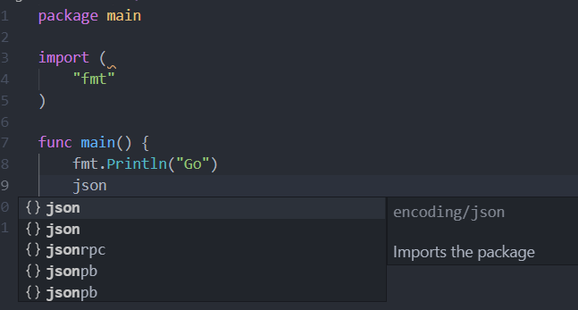
下图未开启 language server ，输入 . 之后才提示
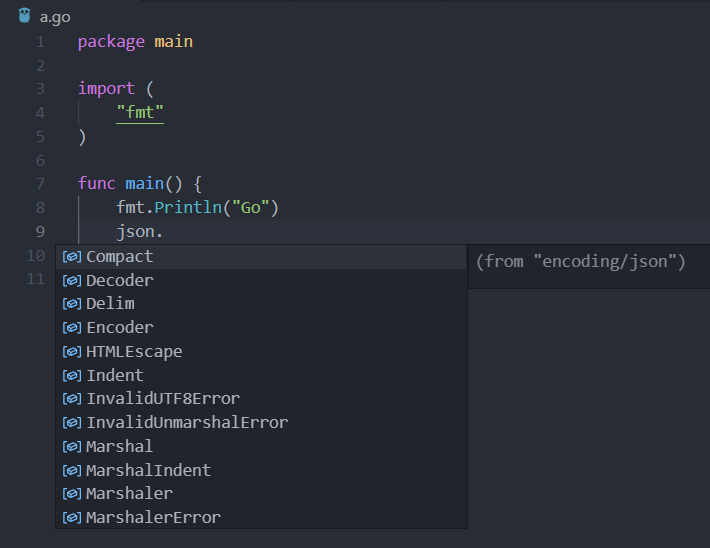
命令行输入
go mod init 你的项目名称（随便）
一些常用的 go mod 命令